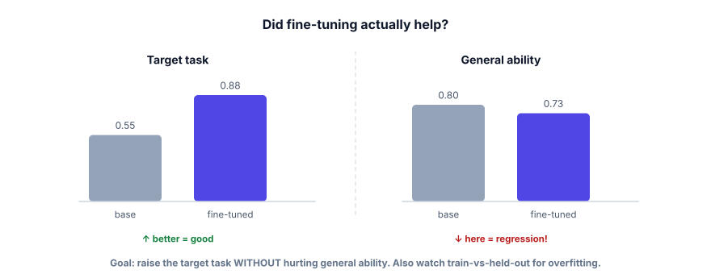

Evaluating a fine-tune
A fine-tune that feels better is worthless; you need proof. And the dangerous failure isn’t obvious badness — it’s a model that aced your task while quietly getting worse at everything else. This lesson is how to know, with numbers, whether you actually improved things.
Two questions every fine-tune must answer
After training, ask: (1) Did it get better at the target task? and (2) Did it get worse at anything else? The first is obvious; the second is where teams get burned. Fine-tuning hard on a narrow task can cause catastrophic forgetting — the model improves on your task but regresses on general ability (grammar, reasoning, refusing bad requests). You only catch this by measuring both, against the original base model, on data the model never trained on.

You evaluate against a baseline — the original base model — on a held-out set (examples never used in training). Measure a task metric (accuracy, exact match, or an LLM-as-judge score) and a general-ability check (a few diverse prompts or a small benchmark). Watch for overfitting (great on train, poor on held-out) and regression / catastrophic forgetting (better on the task, worse generally).
The minimum honest evaluation: score both models on the same held-out task, and sanity-check general ability. Never deploy a fine-tune you didn’t compare to the base.
def accuracy(model, examples):
correct = 0
for ex in examples:
out = generate(model, ex["input"])
if matches(out, ex["expected"]): # exact match, regex, or LLM-judge
correct += 1
return correct / len(examples)
held_out = load("val.jsonl") # NEVER trained on
general = load("general_probe.jsonl") # diverse, off-task prompts
print("target task — base:", accuracy(base_model, held_out))
print("target task — tuned:", accuracy(tuned_model, held_out)) # should be higher
print("general — base:", accuracy(base_model, general))
print("general — tuned:", accuracy(tuned_model, general)) # should NOT be much lowerIf the target task rose and general ability held, ship it. If general ability dropped, you over-fit your task — train for fewer epochs, use more/diverse data, a lower learning rate, or a smaller LoRA rank, and re-measure.
- Always compare to the base model on a held-out set — “feels better” isn’t evidence.
- Measure the target task (should rise) and general ability (should not fall).
- Watch for overfitting (train ≫ held-out) and catastrophic forgetting (task up, general down).
- If general ability drops: fewer epochs, more/diverse data, lower learning rate, smaller rank — then re-measure.
- Evaluation is what turns fine-tuning from a gamble into engineering.
Your fine-tune scores 0.91 on the target task (base was 0.60) — a clear win. What must you check before celebrating?
1. Why must your evaluation set be held out from training, and what goes wrong if it isn’t?
2. Your fine-tune is better on the task but noticeably worse at following unrelated instructions. Name two fixes.
3. Free-text answers make exact-match scoring brittle. What’s a more robust way to score them?
▸ Show solutions & reasoning
1. Held-out data is your only honest read on generalization. If evaluation examples were in training (or near-duplicates), the model may have memorized them, so your score measures recall of seen answers, not ability on new inputs — it’ll look great and fail in production. Independence of the eval set is what makes the number trustworthy.
2. That’s catastrophic forgetting from over-specialization. Fixes: train less aggressively (fewer epochs, lower learning rate, smaller LoRA rank) so you nudge rather than overwrite; and mix in some general/diverse examples with your task data so the model retains broad ability. Then re-measure both axes.
3. Use a more semantic check: an LLM-as-judge that reads the model’s answer and the expected answer (or a rubric) and scores correctness, or check key facts/fields rather than exact strings. This tolerates valid wording differences while still catching wrong answers — it’s the heart of Track 6 (Evals), which generalizes exactly this problem.
Fine-tuning makes a permanent change to a deployed behavior, so the discipline is stricter than for a prompt tweak. Before shipping: compare against the base on a frozen held-out set, check general-ability probes, and ideally run a small regression suite — a fixed set of prompts (including edge cases and safety checks) that must not get worse. After shipping: prefer an A/B test or a careful rollout, watching real-world quality and user signals, because offline metrics never capture everything. A fine-tune that wins offline can still lose on the messiness of production traffic.
This is the moment the whole course converges: evaluating a fine-tune is the same skill as evaluating a prompt or a RAG pipeline — define what “good” means, build a held-out set, measure against a baseline, and never trust a vibe. That’s why Track 6 (Evals & Observability) is next and arguably the most important track for shipping: it turns these per-technique checks into a systematic capability. If you remember one thing from fine-tuning, let it be this: the model you can measure is the only one you can safely ship.
You can now decide on, prepare for, run, and evaluate a fine-tune. Time to pressure-test it. On to the Track 5 interview check.